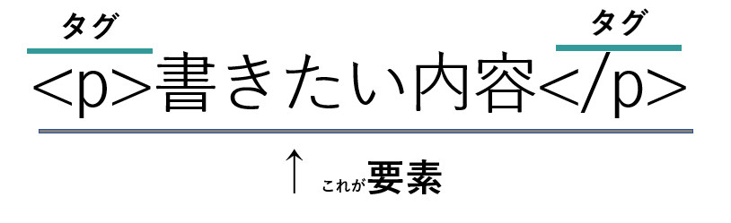

このサイトではおすすめHTML要素3つを紹介しています．
紹介する要素は，HTML（WHATWG Living Standard）より4 The elements of HTMLの項目から参考にしています．
また今回，３つの要素は全て画像等のメディアを扱うHTML要素を取り上げています．
HTMLの要素とは，MDN web docsより
「 HTML は一連の 要素 で構成されており，これらの要素がコンテンツのさまざまな部分を囲み， 一定の表示や動作をさせることができます．」
と記載されており，簡単に「HTMLの中身は『要素』というもので構成されているのだな」という事が分かります．
またこの「要素」を，更に分かりやすく図に表すと以下の様になります．
以上が，「要素」のという物の基本になります．これを踏まえて以下ではおすすめ要素を3つ紹介していきます．
img要素は，画像をあつかう要素の基本と言っても良いのではないでしょうか．
この要素は，正式名称「Image」といい，呼び方は「イメージ」，「アイエムジー」 とも呼びます．
この要素は，自分のwebページに好きな画像を埋め込む事が出来ます． 画像を埋め込むことでより効果的に内容を伝える事が出来ますね．
またいくつか属性が存在し，画像が表示されなかった時の代替えテキストの alt属性，画像表示サイズに関わるwidth,height属性等があります．
See the Pen Untitled by K.T (@PepechiMinmi) on CodePen.
iframe要素は，正式名称「Inlin frame」といい，要素の呼び方は
「インラインフレーム」，「アイフレーム」と呼びます．
この要素を用いると，自分のwebページ内に小さな窓を表示し， その中に他のページを埋め込み表示することができます．
iframe要素を使った例と言えば，お店のレビューサイトに， その店と付近が見れるようにマップを埋め込んでいる例が想像しやすいかもしれません．
要素の属性については，width,height属性，画像系の要素属性にある 遅延読み込みのloading属性等があります．
See the Pen Untitled by K.T (@PepechiMinmi) on CodePen.
画像，webページ埋め込みから発展して最後はvideo要素を扱って行きます．
video要素は，正式名称「Video」といい，呼び方は「ビデオ」と呼びます．
この要素は3つの中でかなり曲者で，動画形式によってはブラウザで動画が再生されないという事が起こります．
ネットサーフィン中にwebページに埋め込まれた動画を再生したいのに，
「エラーが発生しました．しばらくしてからもう一度お試しください．」
等の表示がされたことはないでしょうか．
しかしposter属性を使えば，動画は表示されないけどもワンフレームは表示できる等の処置が出来ます．
他にも，おなじみのwidth,height属性，勝手に再生するautplay，再生・停止・音量等を変えられるcontrols属性があります．
See the Pen Untitled by K.T (@PepechiMinmi) on CodePen.
以上おすすめHTML要素３選いかがでしたでしょうか？
これらの要素を使いこなすことで，さらにwebページが良いものにできると思います．
これは，日本大学文理学部情報科学科 Webプログラミングの演習課題の一貫で作成されたものである．